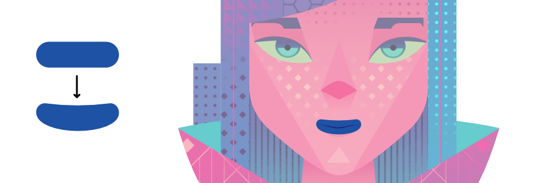

The Convert to Curves operation is not limited to geometric shapes. You can convert almost any object to curves, including text.

You can create new shapes by converting geometric shapes (created using the Shape tools) into curves and then adjusting the nodes of the resulting shape.

The Convert to Curves operation is not limited to geometric shapes. You can convert almost any object to curves, including text.
The shape is now made from curves and the Node Tool is automatically selected. Segments and nodes can be modified with the Node Tool.